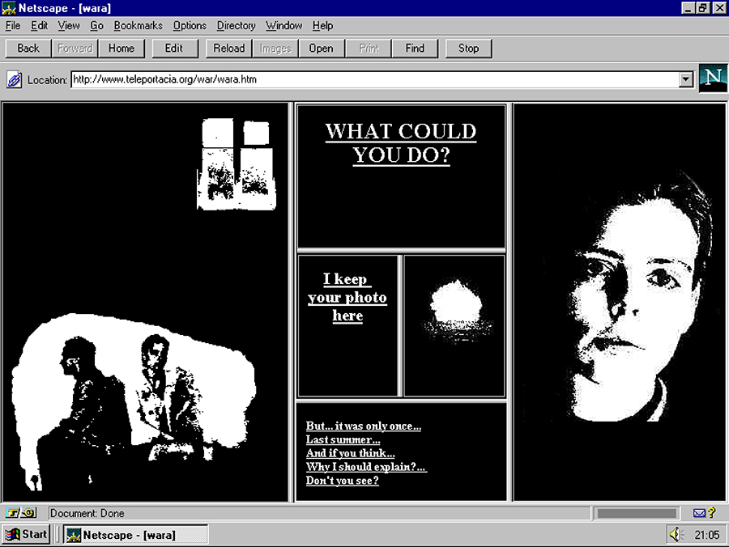

Week Three Assignment
Web Work

Web Work is an informative article that discusses the unfolding of net.artists. Net artists are artists in the 90s who took it upon themselves to make the internet their new medium. These artists took simple concepts such as posting the number to several telephone booths around the city, and turning that into an interactive web experience since anyone from around the world had the ability to call the number and have someone on the other side pick up to hopefully say hello. Designing websites at the time was a young idea that mainly a handful of artists participated in, but it heavily shaped the modern day experience of web design we know today.
It was crucial for net.artists to create a non-discriminatory experience and to dominate the net before it became heavily commercialized by big name brands. Between the mid and late 90s, it was becoming clear that the internet was becoming a part of the culture with internet cafes popping up, and the heavy shift of traditional art institutions recognizing this fresh form of creative expression as art. Many projects were created following these years, but by far the most impressive project was the Name.Space project, which expanded the limited set of URL components. The main idea behind this project was to already claim web names to make it harder for corporations to monopolize.

Net Artists
Olia Lialina is an artist who intended on installing a gallery until her country— Italy— announced a lockdown due to the rapid spread of the coronavirus. Because of the virus she had to put her art online for those to experience, but luckily she is familiar with showcasing her work online. Many Art enthusiasts would consider this a new way of showing art, but art has been unseen and underappreciated on the web since the 90s. Lialina even agrees by stating how nice it is to finally be recognized because it is unfair to coin digital art as a new and exciting development in the art world when it’s been around for over a decade. It’s only now that everyone is forced to find new ways to experience art outside of going to museums and solo galleries that a new wave of online art is reemerging.
